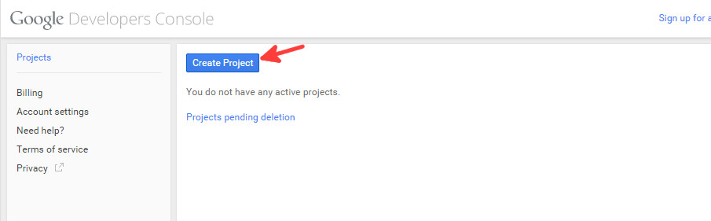
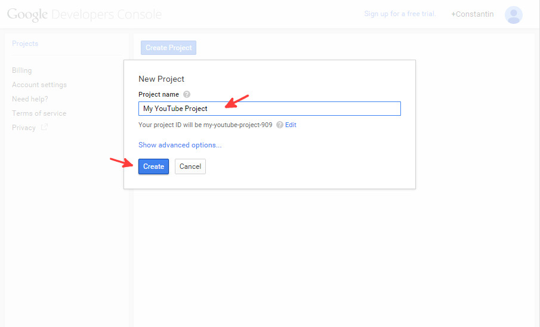
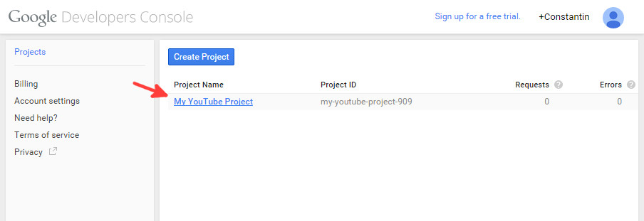
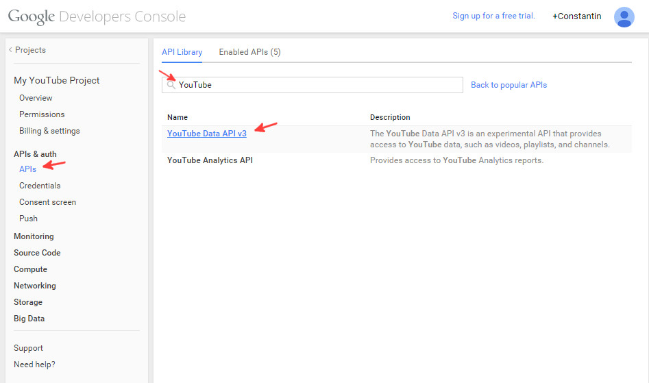
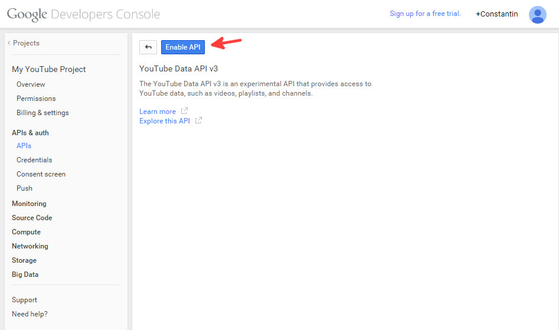
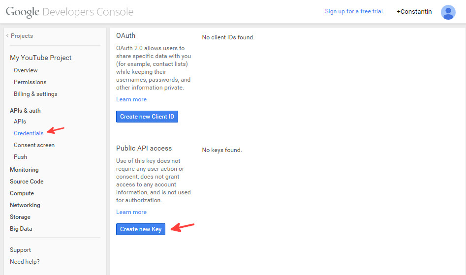
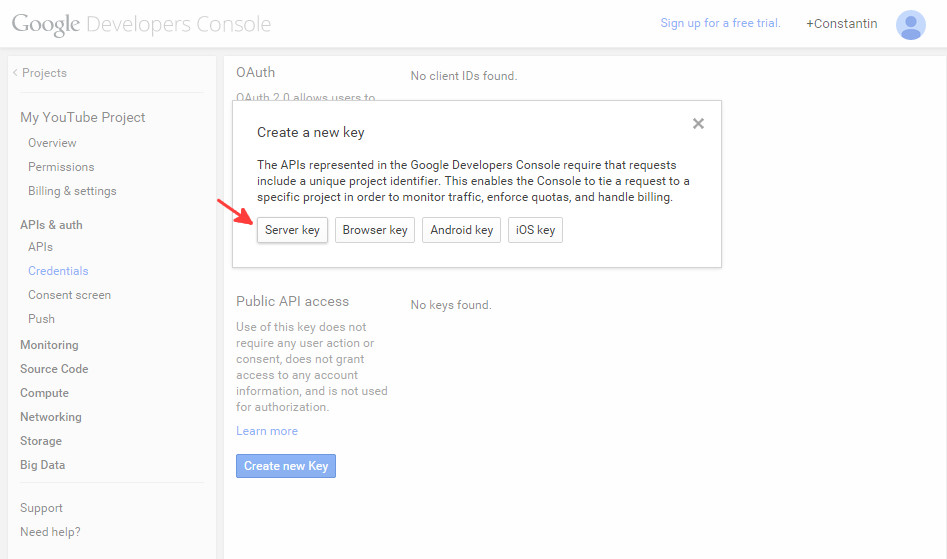
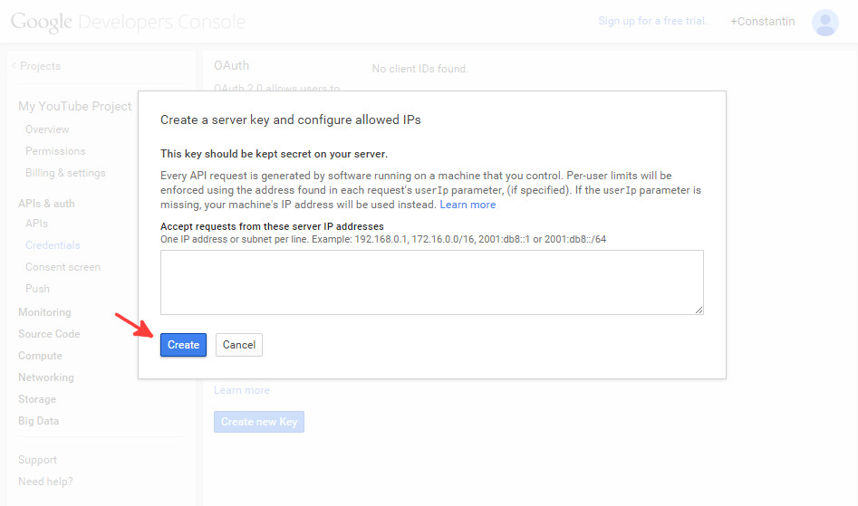
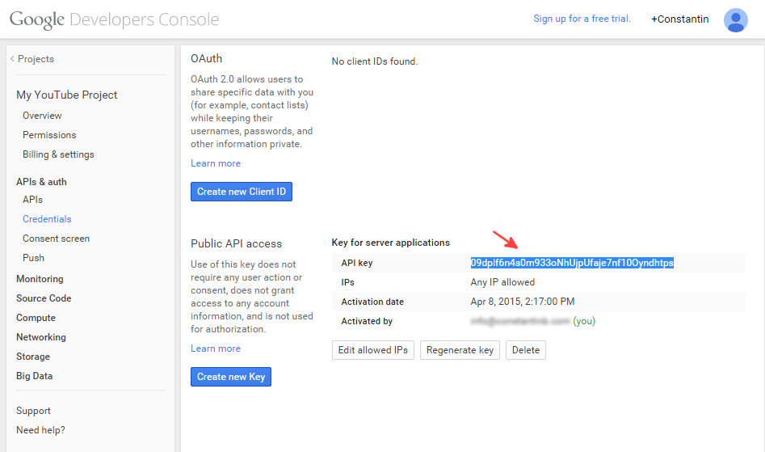

How to get your YouTube API key
To get your API key for
YouTube Data API you need to be logged into your
Google account and access the
Google console. You will be taken to your projects page. If you don’t have any existing projects, create a new project.

Once you click the Create Project button, a modal window will open asking for your project details.

After your project is created, simply enter it by clicking its name.

Once inside your project, you will have to enable YouTube Data API first. From the left menu, go to APIs & auth and then APIs. Once in the APIs page, filter by searching for YouTube and select YouTube Data API v3 from the APIs presented by the console.

From inside the API administration screen, click Enable API button

Now that YouTube API is enabled, you can generate the API key that you will use with the plugin. For this, from the left menu, go to APIs & auth and select Credentials. Once on the credentials page, under Public API access click Create new Key button.

Once you click Create new Key button, the interface will open a modal window having several options; choose the Server key option.

Next, you will have the option to enter a list of IP addresses that are allowed to query APIs using this server key. If you don’t know your server’s IP address you can leave this empty and just click Create button.

Last, copy the API key generated by the console into plugin Settings page, tab API & License in option YouTube API key
